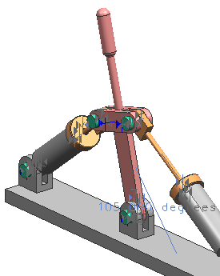

定位 left 布置
-
将 Left 布置设为使用的布置。
杆卡入到中间位置，这个位置是使用复制命令时创建布置时的位置。
在这个例子中，您需要做的是将指定为特定于布置，并更新它。

-
在约束导航器中右击角度 (DES02_LEVER, DES02_PLATE_ 2)约束节点并选择特定于布置。
-
双击角度 (DES02_LEVER, DES02_PLATE_ 2)。
-
将角度更改为105。
-
点击确定。
